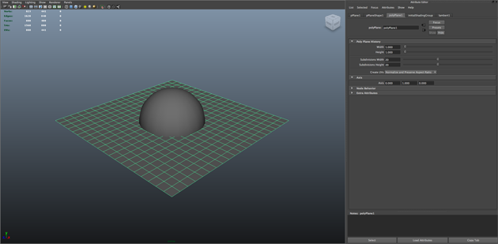
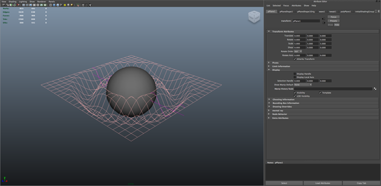
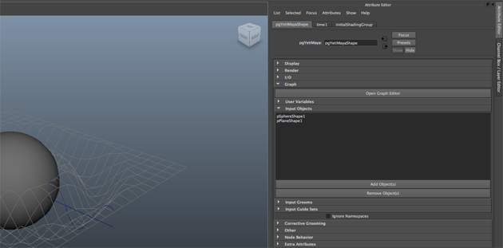
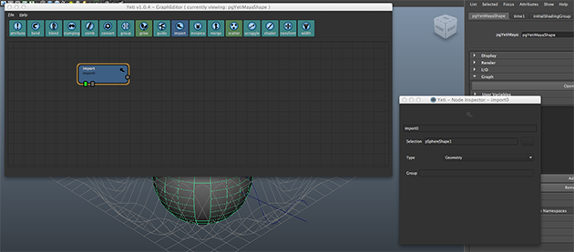
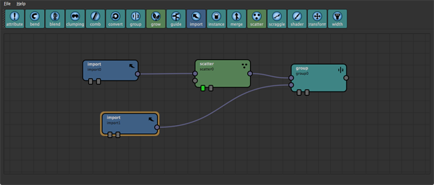
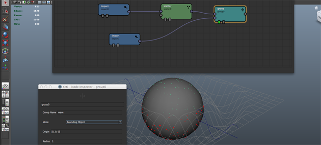
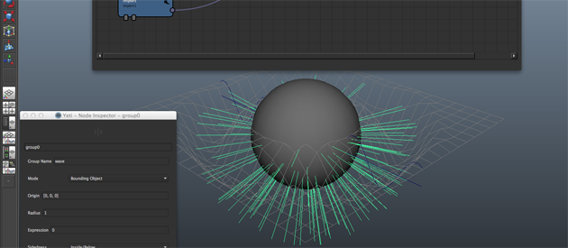

The Group node is used to create groups that can later be used to limit the effect of specific nodes. If you have Display Feedback on with this node displayed Yeti will highlight the points currently being grouped.
| Input | Description |
|---|---|
| 0 Data Flow | Fibres, Particles or Mesh |
| 1 Data Flow | Mesh |
| Parameter | Description |
|---|---|
| Group Name | The name for the new group. |
| Mode | Bounding Volume uses Origin and Radius to determine a spherical volume, Bounding Object uses the geometry from Input 1 to determine the grouping and Expression uses Expression to choose if a point is in the group or not. |
| Origin | when Bounding Volume has been selected this determines the origin of the volume. |
| Radius | when Bounding Volume has been selected this will define the radius of the spherical volume. |
| Expression | when Expression has been selected this will be expression that is evaluated - if the result is true then the point will be included in the group. eg. “$P[1] > 0.5” will result in all the points with a Y location more than 0.5 being grouped. |
| Sidedness | whether to consider points inside/below the surface or outside/above the surface as being grouped. If Close To Surface is selected it will use the points relationship to the actual surface to determine if it should be in the group or not. |
| Distance From Surface | When Close To Surface is chosen for Sidedness this determines how far from the surface the point can be to be considered in the group. |
| Attribute | what attribute should be evaluated, in most cases this is P but you may with to use Pref or N to group based on the direction of the normal etc. |
Maya File: examples/yeti_blendExample.ma
Maya File: examples/yeti_groupExample.ma
The Group node was created to allow users to group points and/or elements ( an element is a strand vs a point which is the points along the strand ) to limit the effect of node down stream to the specified grouped items.
To start first create a sphere and a plane, and scale the plane to 5 units.
We’ll then use the Wave deformer to add animated deformations to the plane - the plane, of course, can be animated any way but this is a nice way of showing the effects of the group node.
The Amplitude for the Wave is 0.15, the Wavelength is 0.5 and we create an expression on the Offset parameter of “wave1.offset = frame * 0.05;”. The wave should now animate nicely while intersecting with the Sphere. I also like to Template the plane now for visibility purposes.
It’s now time to create the Yeti node, select the Sphere and press the CRM ( Create on Mesh ) button in the Yeti shelf, this creates the Yeti node and adds the Sphere as an input by default.
Open the Yeti attribute editor and in the Graph->Input Objects palette Add the plane to the list of input objects. Make sure you select the Plane and not the planes Original Shape.
Let’s build our Graph - open the Graph Editor and create an Import node - in the Import Nodes Attribute Inspector select the pSphereShape object. This tells Yeti that this is where the Sphere object is going to be used in the graph. If you leave this as the default * it will actually represent all of the input objects, so it’s a good idea to be explicit. Toggle the Display of the Import node and you will see that Yeti draws the Sphere in your scene.
Now connect a Scatter node to the Import node and set the Density Multiplier to 20, and another Import node with the Plane selected. Now attach a Group node to the Scatter node, making sure the Scatter node is connected to the first input of the Group - and connect the Plane Import to the second input of the Group Node.
Toggle the display of the group node and in the Group nodes Attribute Inspector set the group name to wave. You may notice that all of the scattered points have now highlighted red, this means that the group wave now contains all of those points. By default the Group node uses a bounding volume defined by its parameters, for this example we’re going to change the Mode to Bounding Object. Once done you will notice that only the points below the deforming plane will be grouped.
With the Yeti node selected scrub the timeline and you will see the group update with the animation.
Now create a Grow node and append it to the Group node, leave the defaults as they are but put wave in the Group parameter. As before you will see that fur will only grow on the grouped points.
Although this is a basic introduction it’s easy to see the power of grouping, any number of groups can be created and more fun can be had when using expressions.